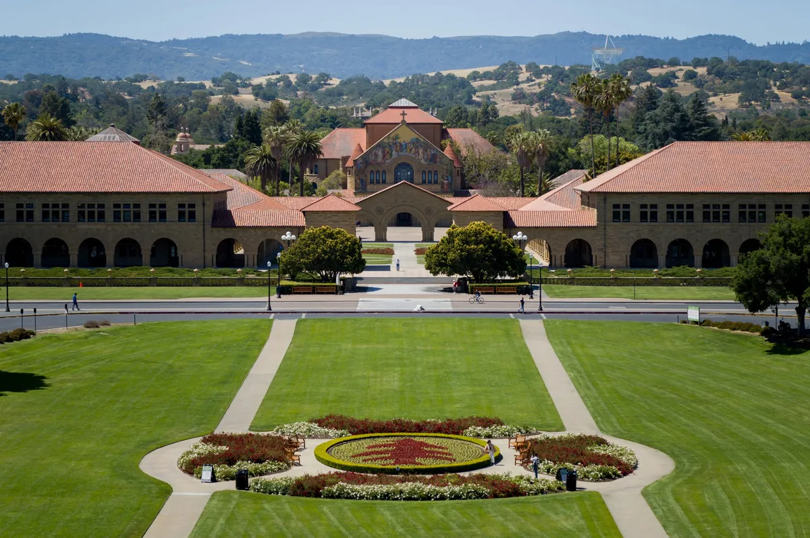
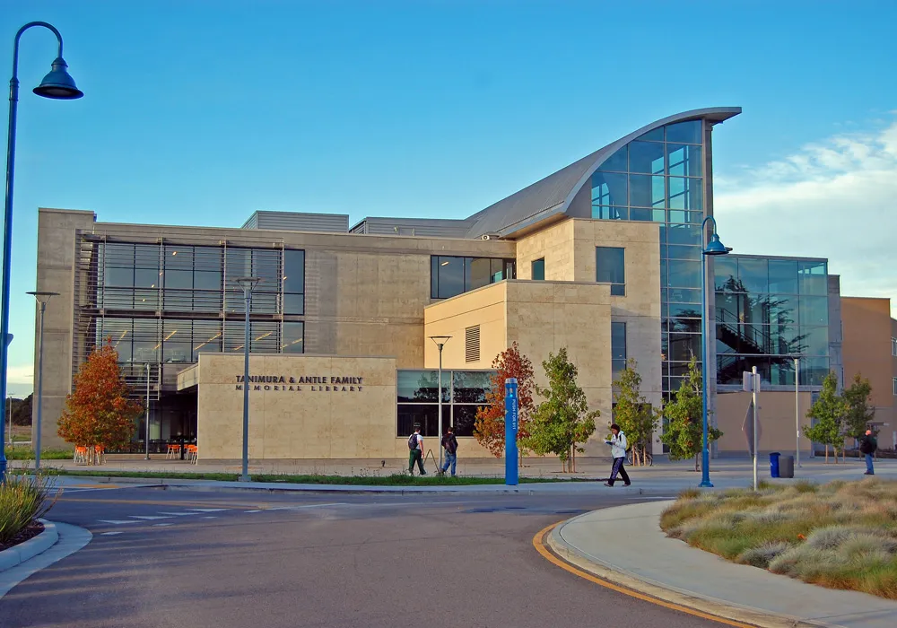
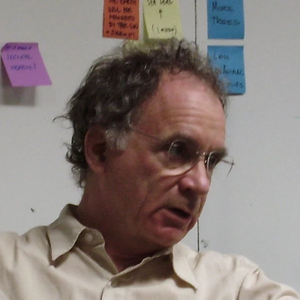

黃仁勳Jensen Huang
NVIDIA 創辦人暨執行長
「你不會被 AI 搶走工作，但你會被懂得使用 AI 的人搶走工作。」
“You're not going to lose your job to an AI, but you're going to lose your job to someone who uses AI.”
Milken 全球會議・2025-05
8 個月，取得史丹佛大學、加州大學柏克萊分校、加州州立大學三校證書，把矽谷的 AI 決策思維帶回你的公司——不需離職、不需出國、免托福。
史丹佛大學·加州大學柏克萊分校·加州州立大學 三校學術資源
全球唯一整合美國三大名校資源的企業家《博士後暨訪問學者》進修計畫・亞洲唯一的美國三大名校合作碩士後發展班項目
2027 第 9 期｜12 人即開班・獎學金原則上僅適用 10 月底前送件・創新企業與卓越人才獎學金

擁有碩士或EMBA已經是標配，如何在名片上展現出獨特性的學術地位？
想對接矽谷最新的商業模式與資金，卻苦無敲門磚，始終在核心圈外徘徊？
身為企業決策者，無法拋下公司出國兩三年進修，難道就註定與世界頂尖學府無緣？
當AI能回答所有MBA的理論與EMBA的實務，傳統學歷正快速貶值。你需要的不再是書本知識，而是頂層決策視野與新興技術洞察，這才是 AI 無法取代的競爭力！
進入2027年，全球經濟正進入一個充滿變數的時代。
隨著各國政策變化，市場機會與風險並存，企業高管若能夠強化全球戰略思維與跨文化溝通能力，無疑將在競爭中取得優勢。
在這樣的背景下，歐美名校的博士後及訪問學者專案不僅提供國際視野與高階學術訓練，更能讓企業主直接與頂尖學者交流，掌握最新的管理理論與數據驅動決策模式，為企業升級轉型奠定基礎。
川普政府致力於重振美國經濟，釋放全球商機！這是了解國際商業環境、拓展全球視野的黃金機會，親臨美國，一週掌握未來趨勢！
美國正全力推進AI與製造業的雙重創新，矽谷是全球創新的中心，走進世界頂尖科技企業，掌握最前沿的商業與技術戰略，助力企業邁向全球！
在營商環境不斷優化的背景下，美國為企業家提供了無限的可能性！透過1週精英課程，洞悉國際商業政策，搶佔先機。稅改新機遇，企業家如何通過全球化視野優化企業結構？
如何在全球市場中找到您的企業定位？與美國頂級名校教授面對面，用最先進的管理理論升級您的領導力。美國政策推動本土經濟復甦，企業家如何借助跨國學習找到與之共贏的最佳模式？
在瞬息萬變的國際環境中，中美商業交流依然是企業成功的關鍵。鏈接中美高管精英，打造屬於您的國際商業合作網絡，從這裡邁向未來，成為兩國企業合作的領軍者！
一週的美國名校學習，不僅是知識的進階，更是個人品牌的跨越式升級！成為國際化領袖，展示企業家的全球視野。從課堂到矽谷企業考察，全方位提升您的管理力、創新力與全球影響力！
「你不會被 AI 搶走工作，但你會被懂得使用 AI 的人搶走工作。」
“You're not going to lose your job to an AI, but you're going to lose your job to someone who uses AI.”
Milken 全球會議・2025-05

「如果現在要我對一群大學生說話，我會告訴他們：把這些 AI 工具練到極度、不可思議地熟練。」
“If I was to talk to a class of undergrads right now, I'd be telling them to get really, unbelievably proficient with these tools.”
世界經濟論壇達沃斯年會・2026-01

「重點不再是資淺或資深，而是『會用 AI』還是『不會用 AI』。」
“It's not about junior vs senior, it's about “good with AI” vs “not good with AI.”
X 貼文・2026-03-04

「學習讓你變得有用，也讓你得到想要的。『學會如何學習』、練習它、精通它，應該是第一優先。」
“Learning allows you to be useful and get what you want. It should be a top priority to learn how to learn, practice it, and master it.”
X 貼文・2025-07-17

「成功停在你不會的地方，所以學會自己想辦法，是最有價值的技能。」
“Success stops where you don't know how to do something. Which makes learning to figure it out the most valuable skill you can learn.”
X 貼文・2025-08-22
「會有更多人能創作軟體與藝術，而世界需要的還多得多；但只要專家擁抱新工具，他們大概仍會遠勝新手。」
“A lot more people will be able to create software, and art. But the world wants a lot more of both, and experts will probably still be much better than novices, as long as they embrace the new tools.”
個人部落格〈The Gentle Singularity〉・2025-06-10
台灣唯一安排「美國產官學研界」參訪與交流。以下兩種行程分開報名。
美國矽谷研究院（SVRI）主辦的總裁研習認證班：史丹佛教授與矽谷企業領袖授課，主題涵蓋 AI 與前沿科技趨勢、Design Thinking 設計思維、創新領導與未來決策；含史丹佛校園參訪、Arrillaga Dining Commons 校園午餐、創業生態體驗與國際交流。【待確認】2027 日期與費用
每年 10 月底舉行，學員可赴美參加：史丹佛、柏克萊校園課程、產官學參訪交流、全球學術論壇成果發表與結業典禮（行程安排與費用另計）。
我們將提供你最紮實、最高效、有系統的1週進修規劃
*實際課程與行程規劃依照校方正式入學通知為準
歡迎晚宴、頂級企業家與學者破冰交流、行前說明會：計畫導師介紹、學習目標設定、學員商務交流
史丹佛大學開課典禮、高階領導力課程、產業前沿學術研究、AI與未來商業模式等頂尖課程、矽谷企業家交流
國際戰略與政策研究、國際科技與投資研究、矽谷高層企業家私享晚宴、創新與創業對談
Union City 市政廳訪問、美國政府與企業政策解析、全球頂級學術環境與文化體驗、數位營銷組織領導力
Apple Park、NVIDIA、Google、矽谷計算機歷史博物館，深入參訪、交流矽谷科技創新發展歷程
矽谷研究院全球學術論壇、領導力總結與未來戰略規劃、博士後 & 訪問學者專題研究發表會、企業未來戰略圓桌會議
全球市場與企業國際化戰略論壇｜舊金山金融區、舊金山文化旅遊探索、返回機場｜賦歸
我們與矽谷研究院、矽谷各大企業攜手合作研究專案，帶領企業家學員到Apple 學習科技與設計的融合、到NVIDIA 學習 AI計算與元宇宙、到Google 學習 人工智慧與未來工作模式...等客製化企業參訪交流，有別於坊間旅遊團的走馬看花，深度了解矽谷科技創新發展歷程，並為自己的企業注入新的領導量能與未來戰略規劃
矽谷擁有全球最具影響力的科技公司與創新企業，涵蓋人工智慧、半導體、雲端運算、社交媒體、自動駕駛、醫療科技等多個領域，我們擁有眾多的企業戰略夥伴的資源提供給你深度學習...


＊歷屆活動照片（取自華沃說明會頁）
＊實體校園班每年 10 月底舉行；實際行程依校方正式入學通知為準。
每期 12 人即開班、平均 15–20 位企業主同班；8 個月一起上課、做專題，結業後與教授、矽谷研究院及歷屆學員持續連結。
近 5 年帶領超過百位企業主、高管與專業人士世界各地進修



STANFORD史丹佛大學位於美國加州矽谷的核心，是世界領先的私立研究型大學，以創新和卓越聞名全球。其校友創建的公司總經濟規模媲美世界第十大經濟體，具備極高的學術聲譽和產業影響力，是企業家和創新者的搖籃。
 UC BERKELEY
UC BERKELEY加州大學柏克萊分校是全球頂尖的公立研究型大學，擁有全美最多頂尖研究課程，並產生過 72 名諾貝爾獎得主。它是創新和科學發展的先驅，並以其在環境科學、計算機科學、人工智慧等領域的突破性研究而享譽國際。

CSU MONTEREY BAY加州州立大學是美國最大的公立大學系統之一，提供超過 1,800 種學位課程，涵蓋 240 多個專業領域。學校與全球 100 多個國家合作，致力於多元化和全球化的教育模式，是商業和學術人才的最佳選擇。本計畫由蒙特雷灣分校 CSU Monterey Bay 參與授課。
本計畫承辦單位。與三校合作開設研究中心級專案，並邀請矽谷大型科技企業高層授課；同時舉辦全球學術論壇，提供學員發表舞台。
＊排名與數據取自華沃官方招生頁（US News 世界大學排名）。本頁不使用任何學校校徽或商標。
8 堂課由史丹佛、柏克萊、加州州立大學各派 2 位教授，另 2 堂由矽谷研究院邀請矽谷科技企業高層主講（過往曾邀請 IBM 高層主講「全球新興技術」）。
AI 導入路線圖、人機協作組織設計
AI 供應鏈與產業版圖重組
生成式 AI、AI Agent、算力與晶片
AI 驅動的行銷與客戶洞察
AI 法規、資料隱私與企業風險
用 AI 工具做研究與數據決策
＊AI 方向為建議主題【待確認】2027 課綱；以上為主題方向；實際課程、講師與順序以校方正式入學通知為準。
從 AI 在企業管理中的應用、數據驅動決策、企業國際化策略等方向，結合自身產業。
課程含研究方法與學術期刊寫作，兼顧學術價值與商業應用。
於矽谷研究院全球學術論壇／專題研究發表會發表成果。
訪問學者與博士後學員，於結業後一年內發表國際期刊，可再取得加州州立大學頒發的第 4 張證書，論文題目將載於證書上。

僅列部分師資，2027 年師資以校方公告為準。
Pegasus 創投合夥人，專注 AI、量子計算等深度科技投資；曾帶領 2 家公司上市。

宏觀經濟學家，柏克萊傑出教學獎得主，著有《宏觀經濟學作為第二語言》。

史丹佛法學博士，專研 AI 與法律；史丹佛醫學院 SPARK 創新計畫顧問。

講授「設計思維」，帶你理解矽谷產品創新的思考方式。
12 年 MBA 教學經驗，專精領導力發展、組織變革與競爭性行銷策略。
創新企業與卓越人才獎學金名額有限，以顧問一對一說明為準
書面審查，免筆試。本計畫為研究中心級國際進修專案（矽谷研究院與三校合作），所取得的「博士後研究員」或「訪問學者」頭銜，這是高於學位的學術榮譽。證書可辦理海牙或使館公證。
| 身份 | 申請資格 | 證書 |
|---|---|---|
| 訪問學者Visiting Scholar・推薦碩士以上 | 碩士學位 | 三校證書 3 張＋期刊發表後第 4 張 |
| 博士後研究Postdoctoral Research | 博士學位 | 三校證書 3 張＋期刊發表後第 4 張 |
| EDP 總裁班Executive Development Program | 大專學歷＋工作經歷 | 三校證書 3 張 |
＊另有碩士後（需碩士學位、3 張證書），建議碩士以上者優先申請訪問學者。未發表期刊者，結業後仍先取得 3 張證書。

＊示意圖，非實際證書樣式【待客戶提供】高解析證書樣本圖
若你同時需要可列入「學歷」的正式學位，可搭配美國瑪麗伍德大學（Marywood University）線上 EMBA／MBA：台灣線上上課，最快一年取得碩士，與美國三校訪問學者專案同步進行、同步結業。
美國三校 × 瑪麗伍德
組合方案內容、學費與證書發放時程由國際招生顧問一對一說明。
【待確認】是否公開組合方案

「世界之大，
歡迎你出海。」
林嘉宏 Win華沃教育創辦人


| 正規學位 MBA／EMBA／DBA | 本計畫 | |
|---|---|---|
| 定位 | 學術導向，完整學位學程 | 產業實務導向，AI 專題＋國際學術經歷 |
| 時間 | 2–4 年以上 | 8 個月或 1 週 |
| 門檻 | 入學考試、英文門檻 | 職業成就、書面審查 |
| 價值 | 學歷文憑（列學歷） | 頭銜認可、教授資源、國際人脈（列經歷） |
可以。本計畫專為企業主、高管、創業家與專業人士設計，研究題目直接結合你的企業營運，由教授與商業導師陪你完成。
可以，例如 AI 在企業管理中的應用、數據驅動決策、企業國際化策略。學期間可預約教授一對一指導。
可以。專題聚焦在經營決策與組織應用，不需要寫程式；計畫沒有硬性學術背景要求，研究課題可直接與企業運營結合。
MBA/EMBA/DBA 偏向管理課程，重視學科知識學習，而博士後/訪問學者計畫則更具「學術+產業實踐」價值。彈性、效率、短時間獲取學術榮譽，比碩博士學位更高端。若同時需要可列入學歷的正式學位，可搭配瑪麗伍德大學線上碩士同步進行。
具碩士以上學歷者，我們建議訪問學者：在學術體系中，訪問學者通常是副教授以上才申請的身份，國際影響力更高。具博士學位者兩者皆可申請。
不一定。結業後即先取得 3 張證書；訪問學者與博士後學員若於結業後一年內發表國際期刊，可再取得第 4 張證書。
一樣，證書上不會有「網路班」字樣。
可辦理海牙或使館公證（費用請洽顧問）。
送件時繳交申請費 NT$8,000；台灣初審未通過者，申請費恕不退還。初審通過後簽約並繳納全額學費，再送美國審核；若美方審核未通過，學費全額退還（申請費不退）。學費含課程、學術指導與證書；實體班另含企業參訪、住宿與課程期間餐飲。【待確認】2027 學費
有。獎學金名額有限，原則上僅適用於 10 月底前完成申請者，與國內外不同協會合作提供「創新企業與卓越人才獎學金」，可折抵部分學費，名額與資格以顧問一對一說明為準。
中英雙語授課，加上即時翻譯，免語言成績。
預約國際招生顧問
報名表、CV、最高學歷、護照＋申請費 NT$8,000
未通過申請費不退
簽約並繳納全額學費
未通過學費全額退還
2027 年 3 月開學
＊申請費 NT$8,000 於任何審核結果皆不退還；學費僅於美方審核未通過時全額退還。
留下資料，國際招生顧問將與你聯繫，提供學費、獎學金（10 月底前送件適用）與說明會場次資訊。